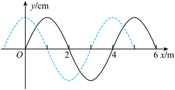
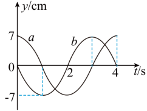
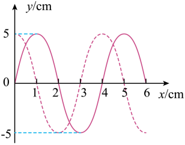
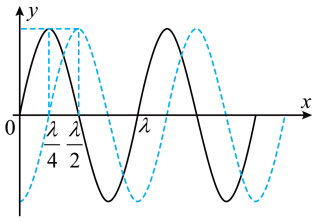

6波的多解性（Multiple Solutions of Waves）
为什么会有多组解？
机械波既有空间周期性（每隔一个波长 $λ$，波形重复），又有时间周期性（每隔一个周期 $T$，振动状态重复）；再加上传播方向常常未知。因此，仅由"某时刻的局部波形""某质点的振动方向"或"两时刻的波形"等片段信息，往往不能唯一确定波，会得到一组可能的解——这就是波的多解性。
⚠️ 三大来源：① 传播方向不确定（向左 / 向右）；② 时间周期性（$Δt = nT + Δt'$）；③ 空间周期性（$Δx = nλ + Δx'$）。$n = 0,1,2,…$
一、空间多解（波长多解）
波形图上两点 $a,b$ 沿传播方向相距 $Δx$，其间相位差对应一段不足一个波长的"零头" $Δx'$，则：
$$Δx = nλ + Δx' \quad⇒\quad λ = \frac{Δx}{n + \dfrac{Δx'}{λ}} \quad (n=0,1,2,…)$$
即波长不唯一，从而波速 $v=λ f$ 也不唯一（频率 $f$ 由波源决定，恒定）。
二、时间多解（周期多解）
经过时间 $Δt$ 后波形（或某质点状态）与原来重合，则 $Δt$ 比周期 $T$ 多出整数个周期：
$$Δt = nT + Δt' \quad⇒\quad T = \frac{Δt}{n + \dfrac{Δt'}{T}} \quad (n=0,1,2,…)$$
特别地，若只说"两时刻波形相同"而没给最小间隔，就取 $Δt' = 0$，得 $T = \dfrac{Δt}{n}$。
三、双向多解（传播方向不确定）
若题目未说明波向哪边传播，则沿 $+x$ 与 $-x$ 都满足，平移量差一个符号：
$$Δx = ±(nλ + Δx')\quad (n=0,1,2,…)$$
📐 波速通式（必背）
$$v = \frac{Δx + nλ}{Δt} \quad (n=0,1,2,…)$$
传播方向不明时，把 $Δx$ 换成 $±Δx$（或写成 $\displaystyle v=\frac{nλ ± Δx}{Δt}$）；已知两时刻波形时，$Δx$ 取两波形间最小的平移距离，$Δt$ 为时间间隔。
同一波形每隔 $λ$ 重复、每隔 $T$ 复现——这就是多解的根源。图中虚线可由实线平移 $Δx$ 或 $Δx+λ$ 得到。
📝 典型例题
例 1（时间周期性）（多选）：如图所示，一列横波以 10 m/s 的速度沿水平方向传播。某时刻的波形如图中的实线所示，经时间 Δt 后的波形如图中的虚线所示。已知 2T > Δt > T（T 为这列波的周期），由此可知 Δt 可能是（ ）

A．0.3 s B．0.5 s C．0.6 s D．0.7 s
答案：BD 难度：0.65
解析：由图读出波长 λ = 4 m，根据 $v=\dfrac{\lambda}{T}$，得
$$T = \frac{\lambda}{v} = \frac{4}{10}\ \text{s} = 0.4\ \text{s}$$
已知 2T > Δt > T，即波传播的时间超过一个周期但不足两个周期。由图可知，若波向右传播，Δt 对应 $T+\dfrac{3}{4}T$，故
$$\Delta t = T + \frac{3}{4}T = 0.7\ \text{s}$$
若波向左传播，Δt 对应 $T+\dfrac{1}{4}T$，故
$$\Delta t = T + \frac{1}{4}T = 0.5\ \text{s}$$
故选 BD。
🔍 怎么从图上看出"要补多少"？
这类"两时刻波形"题，核心就是把实线套到虚线上，找最小的平移量 $Δx'$。最实用的办法是拿"波峰"（或波谷）当参照点——因为波峰位置最显眼、不易看错。
① 先读波长
相邻两个实线波峰的距离就是 $λ$。图中实线波峰在 $x=1\ \text{m}$、$x=5\ \text{m}$，故 $λ=4\ \text{m}$，$T=\dfrac{λ}{v}=0.4\ \text{s}$。
② 看波峰"跑"到哪了
实线波峰在 $x=1\ \text{m}$；虚线波峰在 $x=0\ \text{m}$、$x=4\ \text{m}$。
向右传：波峰整体向右移。把 $x=1\ \text{m}$ 的实线波峰套到右侧最近的虚线波峰 $x=4\ \text{m}$，最小平移量
$$Δx'_{\text{右}} = 4-1 = 3\ \text{m} = \frac{3}{4}λ$$
向左传：波峰整体向左移。把 $x=1\ \text{m}$ 的实线波峰套到左侧最近的虚线波峰 $x=0\ \text{m}$，最小平移量
$$Δx'_{\text{左}} = 1-0 = 1\ \text{m} = \frac{1}{4}λ$$
注意 $Δx'_{\text{右}} + Δx'_{\text{左}} = λ$：向"右补 $\dfrac{3}{4}λ$"等价于向"左补 $\dfrac{1}{4}λ$"（波形每隔 $λ$ 重复一遍），这正是双向多解的来源。
最后套时间条件：已知 $2T>Δt>T$，平移量要超过一个波长，所以必须再加上一整波长：
向右：$\Delta x = λ + \dfrac{3}{4}λ = \dfrac{7}{4}λ \ ⇒\ \Delta t = \dfrac{\Delta x}{v} = T + \dfrac{3}{4}T = 0.7\ \text{s}$
向左：$\Delta x = λ + \dfrac{1}{4}λ = \dfrac{5}{4}λ \ ⇒\ \Delta t = \dfrac{\Delta x}{v} = T + \dfrac{1}{4}T = 0.5\ \text{s}$
例 2（空间周期性）：简谐横波在均匀介质中从 a 传向 b。t = 0 时刻开始计时，a、b 两点的振动图像如图所示，a 与 b 间的距离为 6 m。该简谐横波的波速可能为（ ）

A．5 m/s B．4 m/s C．3 m/s D．2 m/s
答案：D 难度：0.85
解析：振动由 a 向 b 传播，由图线可知周期 T = 4 s。振动从 a 传到 b 的时间可能为
$$\Delta t = nT + \frac{3}{4}T = (4n+3)\ \text{s}\quad (n=0,1,2,3,\ldots)$$
根据 $v\Delta t = \Delta x = 6\ \text{m}$，可得
$$v = \frac{6}{4n+3}\ \text{m/s}\quad (n=0,1,2,3,\ldots)$$
当 n = 0 时，v = 2 m/s；n = 1 时，$v=\dfrac{6}{7}\ \text{m/s}$；n = 2 时，$v=\dfrac{6}{11}\ \text{m/s}$，…… 故选 D。
例 3（波形的隐含性）：一列横波在 x 轴上传播，a、b 是 x 轴上相距 sab = 6 m 的两质点，t = 0 时，b 点正好到达最高点，且 b 点到 x 轴的距离为 4 cm，而此时 a 点恰好经过平衡位置向上运动。已知这列波的频率为 25 Hz。
（1）求经过时间 1 s，a 质点运动的路程；
（2）若 a、b 在 x 轴上的距离大于一个波长，求该波的波速大小。
答案：（1）4 m；（2）$v=\dfrac{600}{4n+3}\ \text{m/s}$（n=1,2,3,…）或 $v=\dfrac{600}{4n+1}\ \text{m/s}$（n=1,2,3,…）
难度：0.65
解析：（1）由题意知，振幅 A = 4 cm = 0.04 m。质点 a 一个周期运动的路程
$$s_0 = 4A = 0.16\ \text{m}$$
1 s 内的周期数为
$$n = \frac{1}{T} = f = 25$$
所以 1 s 内运动的路程
$$s = ns_0 = 25 \times 0.16\ \text{m} = 4\ \text{m}$$
（2）若波由 a 传向 b，由题意得
$$s_{ab} = \left(n+\frac{3}{4}\right)\lambda$$
则
$$v = \lambda f = \frac{600}{4n+3}\ \text{m/s}\quad (n=1,2,3,\ldots)$$
若波由 b 传向 a，由题意得
$$s_{ab} = \left(n+\frac{1}{4}\right)\lambda$$
则
$$v = \lambda f = \frac{600}{4n+1}\ \text{m/s}\quad (n=1,2,3,\ldots)$$
例 4（双向性）：一列沿 x 轴传播的简谐横波，t = 0 时的波形如图中实线所示，t = 0.5 s 时的波形如图中虚线所示，求：

（1）该简谐横波的传播速度；
（2）x 轴上的质点随波振动的周期。
答案：（1）沿 x 轴正方向传播时 $v = \dfrac{\Delta x}{\Delta t} = (8n+6)\ \text{cm/s}$（n=0,1,2,3,…），沿 x 轴负方向传播时 $v = \dfrac{\Delta x}{\Delta t} = (8n+2)\ \text{cm/s}$（n=0,1,2,3,…）；（2）沿 x 轴正方向传播时 $T = \dfrac{\lambda}{v} = \dfrac{2}{4n+3}\ \text{s}$（n=0,1,2,3,…），沿 x 轴负方向传播时 $T = \dfrac{\lambda}{v} = \dfrac{2}{4n+1}\ \text{s}$（n=0,1,2,3,…）
难度：0.94
解析：由图可知波长 λ = 4 cm，时间间隔 Δt = 0.5 s。
（1）若波沿 x 轴正方向传播，传播的距离为
$$\Delta x = n\lambda + \frac{3}{4}\lambda = (4n+3)\ \text{cm}\quad (n=0,1,2,3,\ldots)$$
则波速为
$$v = \frac{\Delta x}{\Delta t} = (8n+6)\ \text{cm/s}\quad (n=0,1,2,3,\ldots)$$
若波沿 x 轴负方向传播，传播的距离为
$$\Delta x = n\lambda + \frac{1}{4}\lambda = (4n+1)\ \text{cm}\quad (n=0,1,2,3,\ldots)$$
则波速为
$$v = \frac{\Delta x}{\Delta t} = (8n+2)\ \text{cm/s}\quad (n=0,1,2,3,\ldots)$$
（2）若波沿 x 轴正方向传播，周期为
$$T = \frac{\lambda}{v} = \frac{2}{4n+3}\ \text{s}\quad (n=0,1,2,3,\ldots)$$
若波沿 x 轴负方向传播，周期为
$$T = \frac{\lambda}{v} = \frac{2}{4n+1}\ \text{s}\quad (n=0,1,2,3,\ldots)$$
例 5（时间周期性）：水平面上有一沿 x 轴正方向传播的简谐横波，如图所示的实线和虚线分别是 t = 0 和 t = 4 s 时的波形图，求：
（1）若已知波速 v = 2 m/s，该波波长的最大值；
（2）若已知波长 λ = 4 m，该波波速的可能值。

答案：（1）32 m；（2）$v=\dfrac{4n+1}{4}\ \text{m/s}$（n=0,1,2,3,…）
难度：0.65
解析：波沿 x 轴正方向传播。拿"上坡零点"当参照点：实线在 $x=0$ 处经过平衡位置向上，而虚线的对应位置（上坡零点）在 $x=\dfrac{λ}{4}$ 处，所以 4 s 内波形向右平移了
$$\Delta x = \left(n+\frac{1}{4}\right)\lambda \quad⇒\quad 4\ \text{s} = \left(n+\frac{1}{4}\right)T \quad (n=0,1,2,3,\ldots)$$
解得
$$T = \frac{4}{n+\dfrac{1}{4}}\ \text{s} = \frac{16}{4n+1}\ \text{s} \quad (n=0,1,2,3,\ldots)$$
（1）当 n = 0 时周期最大，$T_m = 16\ \text{s}$，该波波长的最大值
$$\lambda_m = vT_m = 2 \times 16\ \text{m} = 32\ \text{m}$$
（2）若已知波长 λ = 4 m，该波波速的可能值
$$v = \frac{λ}{T} = \frac{4}{\dfrac{16}{4n+1}}\ \text{m/s} = \frac{4n+1}{4}\ \text{m/s} \quad (n=0,1,2,3,\ldots)$$
📌 破解波的多解性的关键：
- 时间周期性：Δt = nT + Δt′，注意题目是否给出 Δt 与 T 的大小关系。
- 空间周期性：Δx = nλ + Δx′，两点间相位关系决定“零头”是 λ/4 还是 3λ/4。
- 传播方向的双向性：未说明传播方向时，必须分 ±x 两个方向讨论。
- 波形的隐含性：注意“平衡位置向上/向下”“最高点/最低点”等描述对应的相位差。
- 写通式：$v = \dfrac{\Delta x + n\lambda}{\Delta t}$（方向不明时对 Δx 取 ±）。